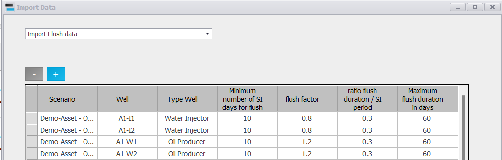
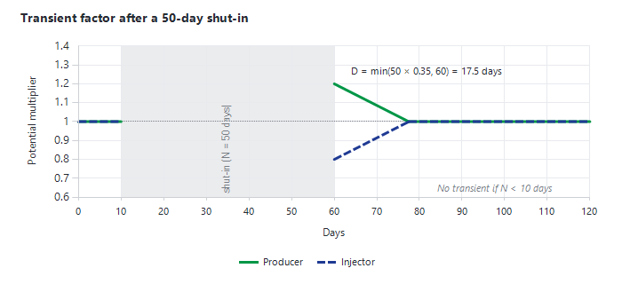
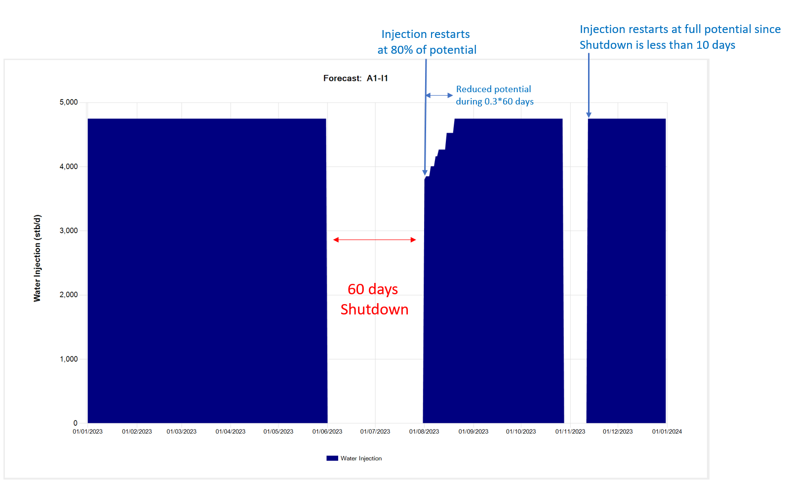
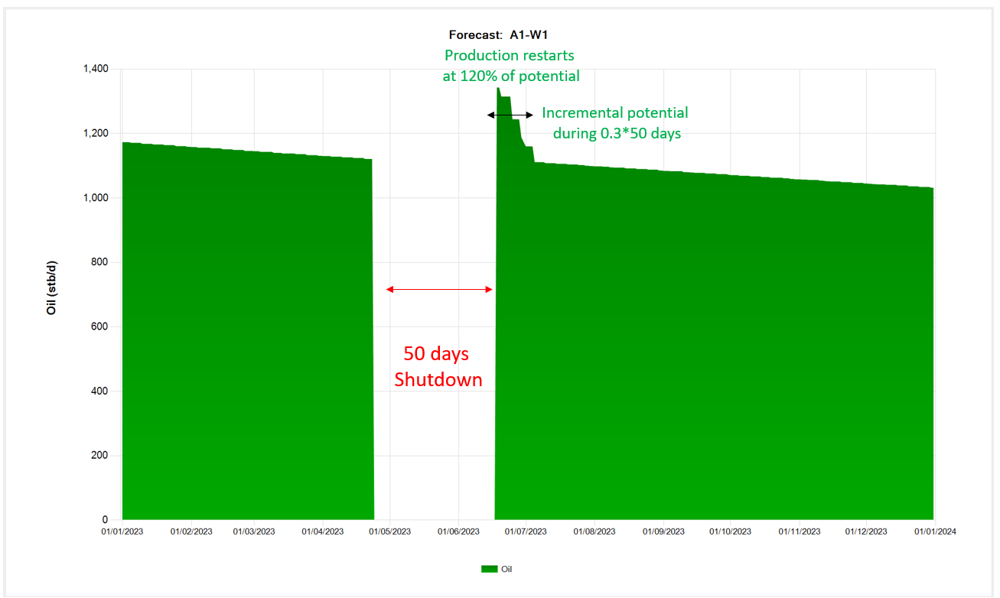

|
Transient production after a shut-in
1. Overview — what the transient option does
After a long shut-in, wells do not restart exactly at their potential:
•producers often produce above their potential for a while (pressure built up around the well during the shut-in);
•injectors often inject below their potential for a while, until they are beaned back up to full rate.
When the transient option is on, Precept multiplies a well's potential by a transient factor after each long enough shut-in, then brings the factor back to 1 in a straight line over the transient duration.
2. Switch it on
1.Select the scenario, then click "Settings" on the main ribbon (see Settings).
2.Tick "Capture transient production" and save the settings.
The option is used when Precept's own optimiser solves the network; it is not applied when the network is solved by GAP.
3. Enter the transient data
1.Click "Decline Curves" on the main ribbon and select the scenario (see Decline curves: Production and Injection potentials).
2.Click "Transient" in the "Import Data" group of the Decline Curves ribbon. The "Import Data" window opens on "Import Transient data".
3.The table lists every well of the scenario, plus the profiles created by conversions. Wells with no data yet show default values. Edit the values or paste them from Excel.
4.Click "Save". Save replaces the whole transient table of the scenario.
|
Column
|
Meaning
|
Default
|
|
Minimum number of SI days for Transient
|
Shorter shut-ins have no transient: the well restarts at its potential.
|
10
|
|
Transient factor
|
Multiplier on the potential on the day the well reopens. Above 1 for an uplift (producers), below 1 for a reduced rate (injectors).
|
1.2 producers, 0.8 injectors
|
|
ratio Transient duration / SI period
|
Transient duration as a fraction of the shut-in length.
|
0.35
|
|
Maximum Transient duration in days
|
Upper limit of the transient duration.
|
60
|

The transient data table (this screenshot shows an older version of the window, where the columns were called "flush").
4. How the transient is calculated
When a well reopens after a continuous shut-in of N days:
1.If N is less than "Minimum number of SI days for Transient", nothing changes.
2.Otherwise, the transient duration is D = N × "ratio Transient duration / SI period", limited to "Maximum Transient duration in days".
3.On the day the well reopens, its potential is multiplied by the "Transient factor". The multiplier then returns to 1 in a straight line over D days: multiplier = factor − (factor − 1) × (days since reopening / D).
The multiplier applies to the oil, water and gas potential of producers and to the water and gas injection potential of injectors; the gas-lift rate is not changed. A transient only follows a shut-in of a well that was producing or injecting before it: a new well coming online for the first time has none.

Figure 1 — The transient multiplier after a reopening: it starts at the transient factor and returns linearly to 1 over the transient duration.
5. Examples
Injector A1-I1 (factor 0.8, ratio 0.3, minimum 10 days): after a 60-day shutdown, injection restarts at 80% of the potential and returns to full potential over 0.3 × 60 = 18 days. After a later shutdown of less than 10 days, injection restarts at full potential.

Producer A1-W1 (factor 1.2, ratio 0.3): after a 50-day shutdown, production restarts at 120% of the potential and returns to the potential over 0.3 × 50 = 15 days.

|